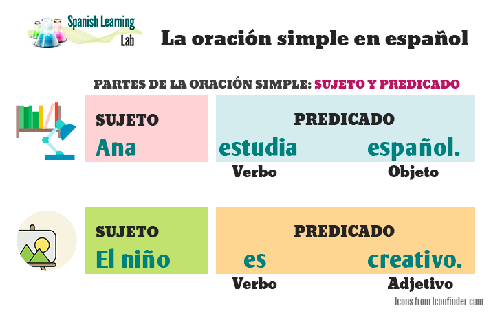

Oraciones simples
Una oración simple es cuando todos los verbos de la oración (sean uno o más) refieren al mismo
sujeto. Por ejemplo: El niño come una manzana.
Para definir si una oración es simple, podemos hacernos las siguientes preguntas:
¿Quién esta haciendo la acción?
Esta pregunta que se debe realizar para reconocer al sujeto (sustantivo) de la oración.
¿Qué es (o hace) el sujeto?
Al responder esta pregunta podremos reconocer la acción, es decir el verbo de la oración e
identificar así al predicado.
Por ejemplo: María fue a mi casa
¿Quién fue a mi casa?
María (sujeto)
¿Qué hizo Maria?
fue a mi casa (predicado)
Ejemplo

Estructura de la oracion simple

Oraciones compuestas
Las oraaciones compuesta, tambien llamadas complejas, son aquellas que tiene más de un precidicado, es decir, dos o más verbos conjugados en forma personal
María estudoa mucho, pero Pedro prefiere descansar